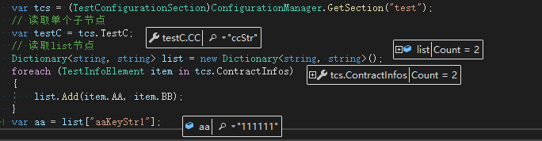

1.1、自定义config结构（参考对应颜色标注）,放到configuration根节点下：
<test>
<testInfos>
<testInfo aa="aaKeyStr1" bb="111111" />
<testInfo aa="aaKeyStr2" bb="222222" />
</testInfos>
<testC cc="ccStr" />
</test>推荐独立文件引用：
将1.1中自定义config新建为xml文件，命名：test.config
configuration根节点下添加:
<test configSource="test.config" />1.2、config文件下需添加对应配置：
configSections节点下添加，name为自定义config的根节点，type为根节点类的命名空间.类名, 命名空间：
<section name="test" type="CMDTest.TestConfigurationSection, CMDTest" />2、创建根节点类TestConfigurationSection，继承ConfigurationSection，对应自定义config中test节点：
public class TestConfigurationSection : ConfigurationSection
{
[ConfigurationProperty("testInfos", IsDefaultCollection = true)]
public TestInfoElementCollection ContractInfos
{
get
{
return (TestInfoElementCollection)base["testInfos"]; // 子列表节点
}
}
[ConfigurationProperty("testC", IsDefaultCollection = true)]
public TestCElement TestC
{
get
{
return (TestCElement)base["testC"]; // 单个子节点
}
}
}3.1、（子节点为集合时使用）创建子节点Collection类，继承ConfigurationElementCollection，对应自定义config中testInfos节点：
public class TestInfoElementCollection : ConfigurationElementCollection
{
protected override ConfigurationElement CreateNewElement()
{
return new TestInfoElement();
}
protected override object GetElementKey(ConfigurationElement element)
{
return ((TestInfoElement)element).AA; // 指定AA属性为唯一索引
}
public override ConfigurationElementCollectionType CollectionType
{
get
{
return ConfigurationElementCollectionType.BasicMap;
}
}
protected override string ElementName
{
get
{
return "testInfo"; // 子节点名称
}
}
}3.2、创建列表子元素类，继承ConfigurationElement（单个子节点均可继承此类），对应自定义config中testInfo节点：
public class TestInfoElement : ConfigurationElement
{
[ConfigurationProperty("aa", IsRequired = true)] // 是否必填
public string AA
{
get
{
return (string)base["aa"]; // 节点属性名称
}
}
[ConfigurationProperty("bb")]
public string BB
{
get
{
return (string)base["bb"];
}
}
}4、（子节点为单个节点时使用）同3.2，对应自定义config中testC节点：
public class TestCElement : ConfigurationElement
{
[ConfigurationProperty("cc", IsRequired = true)]
public string CC
{
get
{
return (string)base["cc"];
}
}
}5、调用代码Demo：
var tcs = (TestConfigurationSection)ConfigurationManager.GetSection("test");
// 读取单个子节点
var testC = tcs.TestC;
// 读取list节点
Dictionary<string, string> list = new Dictionary<string, string>();
foreach (TestInfoElement item in tcs.ContractInfos)
{
list.Add(item.AA, item.BB);
}
var aa = list["aaKeyStr1"];运行效果：

心得：我理解的自定义config无非就是将节点抽象成对象属性，对应的属性需继承相关父类进行读取，对象类的结构需与config结构对应；编写时遇到复杂的config需注意树的深度以及节点、属性对应名称，容易写错，需细心
附上示例源码地址：https://gitee.com/GongQun/TestRun/tree/develop/
如有错误，请指正，谢谢！